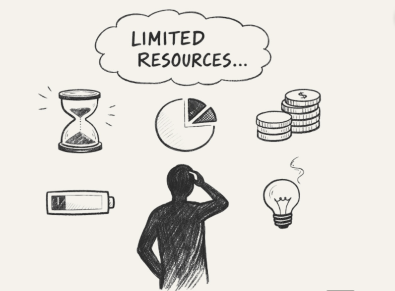
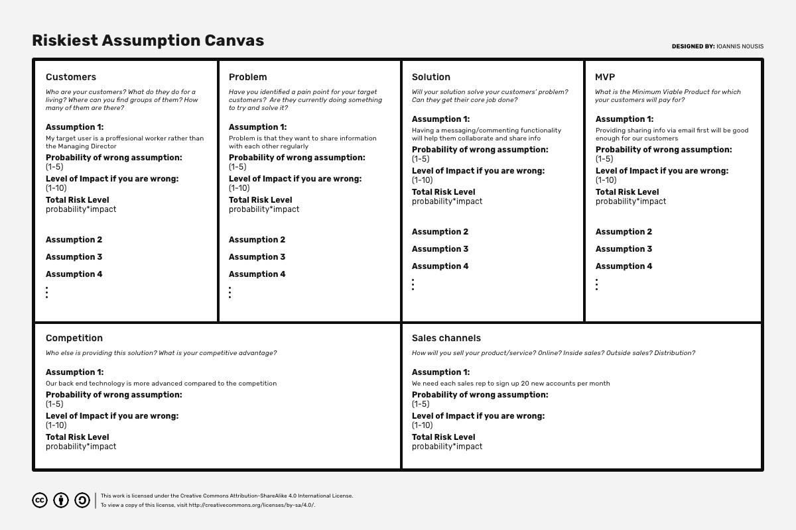

Building with
better feedback
How AI-augmented expert panels and user feedback help startups validate faster
Stéphanie Kioutsoukis · AI for Good Innovation Factory 2026 · Masterclass · Tue 7 July 2026, 10:15
Why innovation fails
Most new products fail.
30,000 new consumer products launch every year, "and many of them fail." HBS Working Knowledge, 2011
They are built around the product, not around the customer's need.Clayton Christensen, Harvard Business School, 2011
of failed startups had poor product‑market fit
CB Insights, 2026 · 385 VC-backed shutdowns since 2023of tested ideas actually work. Even experts misjudge which ones.
Kohavi & Thomke, Harvard Business Review, 2017 · experiments at Google and BingSources: HBS Working Knowledge, Clay Christensen's Milkshake Marketing, 2011 · CB Insights, Top reasons startups fail, 2026 · HBR, The surprising power of online experiments, 2017
Sustainability requires revenue
- Which problem do we solve for whom?
- How do we earn money?
- How do we solve it?
Deep tech validation trap
Expert proof
Is this technically feasible?
- Clinical/scientific credibility
- Regulatory pathway
- Prototype quality
- Patent / IP
- …
Market proof
Will this be adopted?
- User pain
- Clear buyer vs budget owner
- Procurement path
- Adoption behaviour
- …
Most teams over-invest in proving it can work, and under-invest in proving it will be bought and used.
We don't know
what we don't know.
The feedback bottleneck
Needs feedback from
Experts, Users, Buyers, Regulators, Investors
But access is limited
- Hard to reach
- Slow to schedule
- Expensive
- Biased samples
- Too late
The risk: you build on guesses, because real feedback arrives too late.

Iterative work and fast validation
Fast iterations are a way of working that lowers risk.
What are synthetic personas?
Synthetic personas are AI-created versions of the people you want feedback from or understand.
They are built to respond like a target user, buyer, or stakeholder might respond, based on the data and context you give them.
They help you quickly explore different reactions, objections, and scenarios before doing slower real-world research.
Why now
Until recently, the only way to hear a buyer's objections was to find the buyer. AI can now play that role from your own context and data in minutes, so you can run the first feedback rounds before you book a single interview.
Types of synthetic personas
Expert persona
AI plays an expert role.
- Examples
- Clinician · Regulator · UX expert · Investor · Data/privacy expert · Growth advisor
- Best for
- Stress-testing logic, safety, feasibility, pitch, risks, and quality.
- Risk
- Can sound authoritative even when missing context.
Customer persona
AI pretends to be a target customer.
- Examples
- Patient · Nurse · NGO programme officer · Procurement lead
- Best for
- Surfacing pains, objections, workflow issues, trust barriers, and adoption questions.
- Risk
- Weak for predicting real behaviour, price, demand, or willingness to pay.
What the advice is grounded in
- 1 · Generic prompt-basedYou only describe the role: "Act as a hospital buyer."
- 2 · Context-richYou give your product, market, pitch, assumptions, and target user.
- 3 · Data-groundedYou give real interviews, survey answers, CRM notes, pilot feedback, or support tickets.
Where synthetic research fits your workflow
Early exploration & problem discovery
Map the problem before you commit time and money. Use synthetic personas to surface likely user pains, behaviours, objections, and context so your first real interviews start with better questions.
Concept & messaging testing
Test different versions of your idea before you pitch or build. Use synthetic personas to compare product concepts, value propositions, and messaging angles across different users, buyers, and stakeholders.
Insight between real feedback rounds
Keep learning when real research is too slow, expensive, or hard to schedule. Use synthetic personas between customer calls, expert reviews, pilots, and investor meetings to spot gaps and prepare the next conversation.
DISCLAIMER Synthetic personas are a discovery co-pilot, not a replacement for real customer research. Use them to explore the problem, sharpen your questions, and focus your limited time with real users, buyers, experts, and investors.
Is fake research better than no research?
| What research suggests | What it means for founders |
|---|---|
| Human-AI hybrid beats human-only and LLM-only in one 2025 marketing study | Use AI to prepare research, then validate with humans |
| Only 24.9% of 285 LLM-human comparisons were similar; 65.3% diverged | Default assumption: synthetic feedback may be wrong |
| Synthetic respondents overstated willingness-to-pay for indulgent products in one 2026 pricing study | Never use synthetic personas to set price or prove demand. |
Sources: Arora, Chakraborty & Nishimura, AI-Human Hybrids for Marketing Research, Journal of Marketing 89(2), 2025 · Sarstedt, Adler, Rau & Schmitt, Your Next Respondent Might Be an LLM, NIM Marketing Intelligence Review 18(1), 2026 · Oetzel & Maiberger, How price sensitive is AI?, Journal of Marketing Analytics, 2026
AI creates hypotheses. Humans create evidence.
| "Procurement may be complex." | Procurement is a major adoption barrier. | Interview hospital buyers / procurement leads. |
| "Nurses may not want another dashboard." | Workflow burden will reduce adoption. | Interview nurses / observe workflow. |
| "The buyer may not own the budget." | Budget ownership is unclear. | Interview budget holders. |
| "Users may distrust AI recommendations." | Trust is a key adoption condition. | Interview users / test prototype explanation. |
| "Investors may question route to market." | GTM story is not credible enough. | Ask advisors / investors for pitch feedback. |
What makes a synthetic persona reliable?
Near-Zero
Generic prompt only"Act as a customer"
No real context
No real data
Low
Startup context addedPitch deck
Product description
Target segment
Founder assumptions
Low-Medium
Specific persona conditioning · Role · geography · demographicsCurrent behaviour · Pain point · Decision criteria · "What this persona would not say"
Medium
Real data grounding5+ real interviews
Survey verbatims
CRM / waitlist data
Reviews, forums, support tickets
Direct customer quotes
High
Human-calibrated persona
Top outputs checked with real people
Prompt + model version logged
Updated with new interviews
Used as hypothesis, not evidence
Setting up an expert panel
What are we trying to improve?
Examples: pitch, product concept, clinical logic, GTM, regulatory pathway, data model.
Whose expertise do we need?
Examples: clinician, regulator, buyer, investor, UX expert, data/privacy expert.
What does the expert need to know?
Examples: Product, target user, market, current evidence, assumptions, constraints.
What should the expert look for?
Examples: Weaknesses, missing evidence, risks, objections, adoption blockers, unclear logic.
What should we get back?
Examples: Top risks, questions to test, evidence needed, next human conversations.
Simulate the adoption system
The magic formula
Who are we trying to understand?
- Segment
- Role
- Context
- Decision power
- Motivations
- Barriers
What problem are they dealing with?
- Needs
- Pains
- Current workaround
- Frustrations
- Desired outcome
- What they already use
- Reference points
How do they decide or adopt?
- Buying journey
- Path to use
- Approval process
- Friction points
- Trust barriers
- Switching costs
- Reasons to stay
Ask better questions
Do not ask for approval! Ask for friction.
- What would make this fail?
- What would make you distrust it?
- What would make you not use this?
- What evidence would you need before trying it?
- What would make this hard to adopt?
- What would stop this from becoming a priority?
- What would this need to replace?
- Which part of the pitch feels weakest?
- Who else would need to approve this?
- What would this compete with in your workflow or budget?
Ask better questions
Ask for words, not scores.
Free-text reactions and A-vs-B ranking - never a rating or a price.
Don't
"On a scale of 1-10, how likely are you to buy this? What would you pay?"
Do
"You are a procurement lead at a mid-size hospital in Kenya. React in your own words: first thought, biggest hesitation, what you'd use instead. Then: here are two versions, A and B - which do you prefer, and why?"
Where synthetic personas break
Synthetic personas are (still) weak in predicting real customer behaviour, such as:
- What price people will pay
- Whether customers will buy
- How large the market is
- Whether users will adopt
- Whether investors will invest
- Whether to launch, pivot, or stop
- Non-Western / non-English markets - model fidelity drops sharply.
They break for one reason: a persona has no hidden interior - only what people say in public, not what they privately think or do.
Turn synthetic feedback into a real test
[do an A/B campaign on LinkedIn]
[% of shares on social media]
[>30% of returning customers]
Example
Turn synthetic feedback into a real test
Start with the riskiest assumption

Source: Riskiest Assumption Canvas, Ioannis Nousis, uxdesign.cc · CC BY-SA 4.0
Setting up a validation lab as a project
Upload
- Pitch deck
- Business model
- Target users
- Assumptions
- Interviews
- Pilot feedback
Add rules
- Hypotheses, not evidence
- Ask for friction
- Separate expert/ user/ buyer feedback
Examples
- Synthetic clinician
- Synthetic buyer
- Synthetic regulator
- Synthetic investor
- Synthetic end user…
Fresh model: from chat to automated system
| General Chat | Project | Prompt Engineering | Agent / App | |
|---|---|---|---|---|
| Knows general knowledge | ||||
| Knows my documents | ✕ | |||
| Has a specialist role | ✕ | Limited | ||
| Chooses what knowledge to load | ✕ | ✕ | ✕ | |
| Chooses which tools to use | ✕ | ✕ | Limited | |
| Adapts to each request | ✕ | ✕ | Limited |
Fresh model: from chat to automated system
| Area | Description | Example | When |
|---|---|---|---|
| AI Helper | Use GPT/Claude in chat to act as one synthetic expert, user, buyer, or blocker | Act as a hospital procurement lead. What would make you reject this pilot? | One-off checks, daily use, fast feedback |
| AI Playbook | Use a repeated method with saved prompts, Projects, or Custom GPTs | Run our pitch through the expert panel: clinician, buyer, regulator, investor, data/privacy expert. | Repeated startup reviews, accelerator sessions, founder workflows |
| AI Automation Agent | Automate a specific persona task | Upload a pitch deck and generate: 5 synthetic personas, key objections, hypotheses, and real interview questions. | When the task is structured and repeated |
| AI Augmentation Agent | Add synthetic persona insight into an ongoing validation process | After each real interview, update the persona assumptions and flag what still needs validation. | When humans need to stay in control but want faster synthesis |
| AI Agent Team | Multiple AI agents simulate different perspectives and challenge each other | User agent, buyer agent, blocker agent, regulator agent, and investor agent review the same product and produce a joint risk map. | When decisions need several perspectives |
| AI Apps | Build a dedicated tool for persona-based validation | A startup validation app that turns a pitch deck into synthetic panels, testable hypotheses, interview guides, and evidence tracking. | When the workflow is valuable enough to productise |
Use synthetic personas across the innovation lifecycle
Early stage
Explore
Product stage
Stress-test
GTM stage
Sharpen
Scaling stage
De-risk
Use cases during startup lifecycle
| Startup stage | Best use of synthetic personas | What to validate with humans |
|---|---|---|
| Idea / discovery | Surface pains, assumptions, objections, stakeholder perspectives | Real problem, urgency, current workaround |
| Product development | Stress-test features, UX, workflow fit, clinical / technical logic | Usability, workflow integration, adoption barriers |
| MVP / pilot | Prepare pilot questions, anticipate blockers, compare use cases | Real usage, behaviour, pilot outcomes |
| Marketing & messaging | Compare value propositions, headlines, objections, segment language | Message resonance with real buyers / users |
| Sales & GTM | Simulate buyer, blocker, procurement, budget owner, channel partner | Buying process, budget, procurement path, sales cycle |
| Scaling | Stress-test segments, channels, partnerships, operational risks | Unit economics, retention, expansion, local market evidence |
Takeaways
- Synthetic personas are a fast first pass, not customer proof.
- The data underneath determines quality.
- Ask for friction, not approval.
- Careful when using synthetic personas for pricing, WTP or market proof.
- AI creates hypotheses. Humans create evidence.